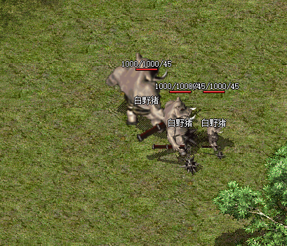

怪物体型放大、缩小功能 
1、扩展cfg_monster.xls表Q列为怪物体型倍数，比如150=刷新出来的怪物体型放大1.5倍
2、MonGenEx 颜色参数扩展 例如255#150表示本次刷的怪物体型放大1.5倍
3、MonGenEx
颜色参数扩展 例如255#150;3#0#120;测试1
表示怪物体型1.5倍，所有属性提升1.2倍(血量、攻击下限、攻击上限、防御下限、防御上限)
3#0#120;测试1
解析
3 表示该属性有效的职业，0=战士、1=法师、2=道士、3=全职业，该命令为怪物所以填3
0 表示怪物所有属性，1=生命值、2=魔法值、3=攻击下限、4=攻击上限等等，详细请参考属性对照表的ID、移动速度ID为92
120
表示调整的百分比，大于100即为提升，少于100则降低
测试1 表示该怪物读取的爆率文件，注意:爆率文件必须对应MonItems\ScriptMonItems\测试1.txt，请在爆率文件夹下创建ScriptMonItems目录及爆率文件。不写或读不到文件则爆率不变
注意：爆率文件是在M2启动的时候读取进来的，重载爆率无效，重启M2有效。
[@mian]
#IF
#ACT
MonGenEx 0 638 413
白野猪 1 1 0 255#
MonGenEx 0 639 413 白野猪 1 1 0 255#150
MonGenEx 0 640 413 白野猪 1 1 0
255#50
SENDMSG 0
刷新了一只白野猪精英，体型是白野猪的1.5倍
SENDMSG 0
刷新了一只白野猪弱小，体型是白野猪的0.5倍
MonGenEx <$map> <$X> <$Y> 稻草人 2 1 0 233#200;3#0#120|3#20#50|3#92#100#1;测试1
SENDMSG 6 血量、攻击下限、攻击上限、防御下限、防御上限1.2倍